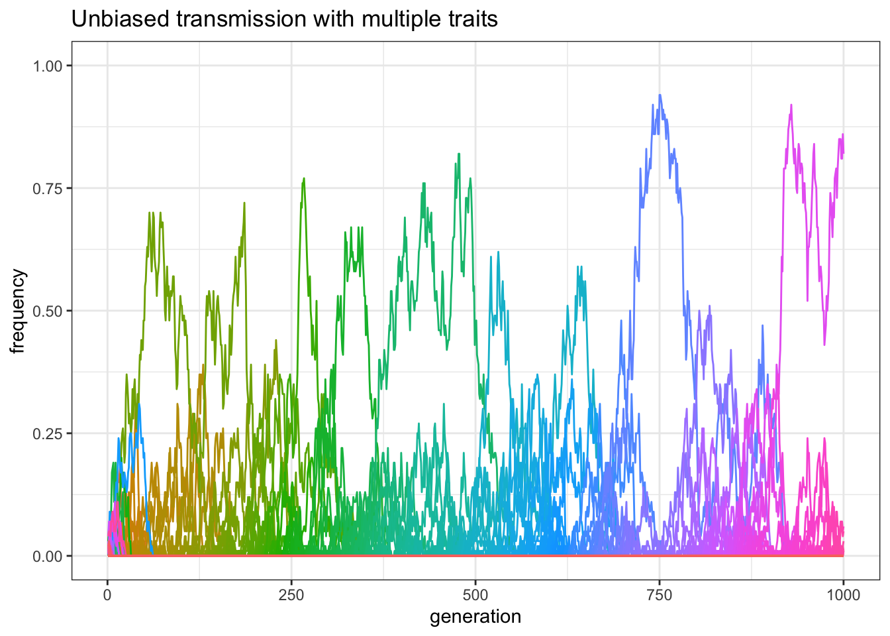
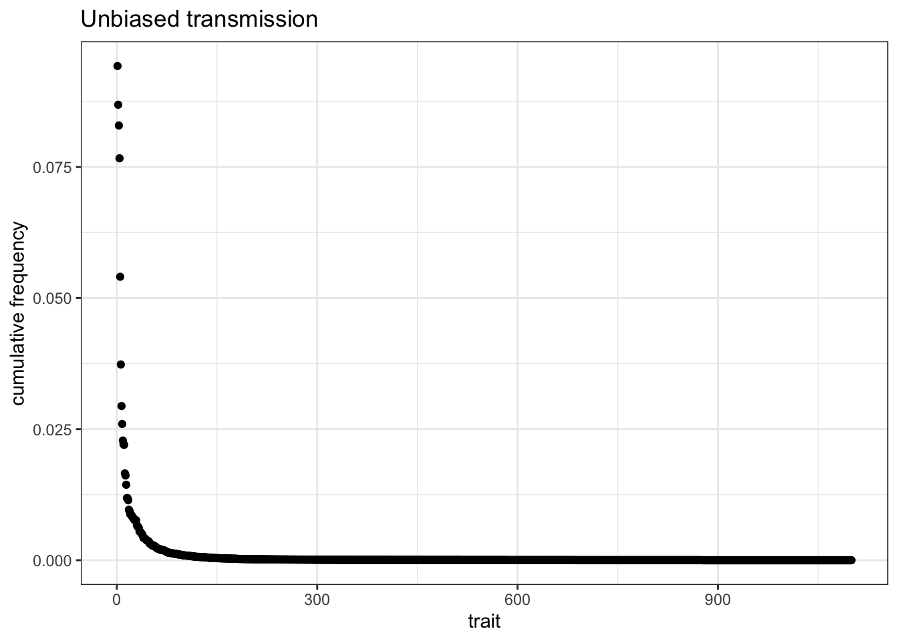

7 Multiple traits models
In all the scenarios we considered so far, individuals could posses one of two cultural traits, \(A\) or \(B\). This is a useful simplification, and it represents cases in which cultural traits can be modeled as binary choices, such as being in favour or against a particular policy, choosing between Beatles and Rolling Stones (and no one else!), eating meat or not, and similar. In other cases, however, there are many options: there are many books to read, movies to watch, and, despite our Beatles and Rolling Stones example, many musical bands one can choose to listen to. What does it happen when we copy others’ choices? To simplfy, we are again assuming unbiased copying as in the first chapter: all traits are equivalent and we do not copy preferentially from any individual, but just pick them at random.
As usual, we specify some value for the fixed parameters of the model: \(N\) and \(t_\text{max}\).
library(tidyverse)
set.seed(111)
N <- 100
t_max <- 200TO DO
The first modification we need to do in the code concerns how traits are represented. Since we have an undetermined number of possible traits we can not use letters any more, but we will use instead integers, so that traits will be now referred as trait \(1\), trait \(2\), trait \(3\), etc.
How do we introduce traits in the population? One possibility is to first initialise the population as we have done before, but with many traits, perhaps, \(N\) traits (the same number of the individuals in the population):
population <- sample(1:N, N, replace = TRUE)The basic code is similar to what we have already done, but what the output should be? We can save the frequencies of all N traits to have an idea of what happens in the simulation. This is fine for now, but it is computationally expensive (we need a matrix of dimensions \(N\) and \(t_{max}\). For simulations with many more traits and individuals, or if we want to run many repetitions, we may need to be able to know in advance what is the exact question we want to ask, and structure the output accordingly.
library(tidyverse)
unbiased_transmission_multiple_1 <- function(N, t_max) {
output <- matrix(data = NA, nrow = t_max, ncol = N)
rownames(output) <- paste("T", 1:t_max, sep = "")
colnames(output) <- paste("C", 1:N, sep = "")
population <- sample(1:N, N, replace = TRUE)
# create first generation
output[1, ] <- hist(population, 0:N, plot = FALSE)$density
# add first generation's p for all traits
for (t in 2:t_max) {
previous_population <- population # copy individuals to previous_population tibble
population <- sample(previous_population, N, replace = TRUE)
# randomly copy from previous generation
output[t, ] <- hist(population, 0:N, plot = FALSE)$density # get p for all traits and put it into output slot for this generation t
}
output # export data from function
}plot_unbiased_transmission_multiple_1 <- function(data_model) {
generation <- rep(1:dim(data_model)[1], dim(data_model)[2])
data_to_plot <- as_tibble(data_model) %>%
gather(num_range("C", 1:dim(data_model)[2]), key = "trait", value = "frequency") %>%
add_column(generation)
ggplot(data = data_to_plot, aes(y = frequency, x = generation)) +
geom_line(aes(colour = trait)) +
ylim(c(0, 1)) +
theme_bw() +
theme(legend.position = "none") +
labs(title = "Unbiased transmission with multiple traits")
}Another modification in the code above concerns how we measure the frequency of the traits in each generation. The function hist(), as the name suggests, is generally used to plot an histogram of the data. However, it can be used, adding the argument plot = FALSE, to only calculate what we would need for an histogram, without producing the graph. Among the outputs produced, density gives the relative frequencies of the binned data, which is what we are interested in.
Finally, the call to ggplot() is similar to what we have already done when plotting multiple runs, with the difference that now the different colored lines do not represent different runs, but different traits, as indicated by aes(colour = trait). The new line theme(legend.position = "none") simply tells to not include the legends in the graph, as it is not informative, and it would show 100 colors, one for each trait.
As usual, we can call the function and see what happens:
plot_unbiased_transmission_multiple_1(unbiased_transmission_multiple_1(N = 100, t_max = 200))
In the majority of cases, in 200 generations, only one or two traits are still present in the population and, if you increase \(t_{max}\) for example to 1000, virtually all runs end up with only a single trait reaching fixation:
plot_unbiased_transmission_multiple_1(unbiased_transmission_multiple_1(N = 100, t_max = 1000))
This is similar to what we saw when considering the analogous situation with only two traits, \(A\) and \(B\): with unbiased copying and relative small populations, drift is a powerful force, that quickly erodes cultural diversity.
As we already discussed, increasing \(N\) limits the effect of drift. You can experiment with various values for \(N\) and \(t_{max}\). However, the general point is that variation is gradually lost in all cases. How can we counterbalance the homogenizing effect that drift has in small and isolated population, such as the one we are simulating?
An option is to introduce new traits with individual innovations. We can imagine that, at each time step, a proportion of individuals, \(\mu\) (the Greek letter Mu is the standard notation for the mutation rate in genetic evolution, which has an analogous function here), introduces a new trait in the population. The remaining proportion of individuals, \(1-\mu\) copy at random from others, as before. We can start with a small value, such as \(\mu=0.01\). Since \(N=100\), this means that at each generation, on average, one new trait will be introduced in the population.
mu <- 0.01Let’s see how we can write what happens at each generation:
for (t in 2:t_max) {
last_trait <- max(population) # record what is the last trait introduced in the population
previous_population <- population # copy the population tibble to previous_population tibble
population <- sample(previous_population, N, replace = TRUE) # randomly copy from previous generation's individuals
innovators <- sample(c(TRUE, FALSE), N, prob = c(mu, 1 - mu), replace = TRUE) # select the innovators
population[innovators] <- (last_trait + 1):(last_trait + sum(innovators)) # replace innovators' traits with new traits
}There are two modifications here. First, we need to select who are the innovators. For that, we use again the function sample(), picking \(TRUE\) (corresponding to be an innovator) or \(FALSE\) (keeping the copied cultural trait) for \(N\) times. The draw, however, is not random: the probability of drawing \(TRUE\) is equal to \(\mu\), and the probability to draw \(FALSE\) is \(1-\mu\). You can think about the procedure in this way: each individual in the population flips a biased coin that has \(\mu\) probability to land on, say, head, and \(1-\mu\) to land on tail. If it land on head they are selected as innovators, and they introduce a new trait in the population.
Second, we need to keep track of the new introduced traits. In order to do so, we record at the beginning of each generation what is the “name” of the last trait introduced (at the beginning, with \(N=100\), it will be “100”, as we initialise each individual of the population with a different trait). When new traits are introduced, we call them with consecutive numbers: the first new traits will be called “101”, the second “102” and so on.
We can now, as usual, wrap everything in a function.
unbiased_transmission_multiple_2 <- function(N, t_max, mu) {
max_traits <- N + N * mu * t_max
output <- matrix(data = NA, nrow = t_max, ncol = max_traits)
rownames(output) <- paste("T", 1:t_max, sep = "")
colnames(output) <- paste("C", 1:max_traits, sep = "")
# create first generation
population <- sample(1:N, N, replace = TRUE)
output[1, ] <- hist(population, 0:max_traits, plot = FALSE)$density
# add first generation's p for all traits
for (t in 2:t_max) {
last_trait <- max(population) # record what is the last trait introduced in the population
previous_population <- population # copy individuals to previous_population tibble
population <- sample(previous_population, N, replace = TRUE)
# randomly copy from previous generation
if (last_trait < max_traits) {
innovators <- sample(c(TRUE, FALSE), N, prob = c(mu, 1 - mu), replace = TRUE) # select the innovators
population[innovators] <- (last_trait + 1):(last_trait + sum(innovators)) # replace innovators' traits with new traits
}
output[t, ] <- hist(population, 0:max_traits, plot = FALSE)$density # get p for all traits and put it into output slot for this generation t
}
output # export data
}You should be familiar with more or less everything within this function, with one exception: the introduction of the new quantity max_traits. This is a trick we are using to avoid making the code too heavy to run. Our output matrix, as you remember, record all the frequencies of all traits. When programming, a good rule-of-thumb is to avoid to modify dynamically the size of your data structures, such as, for example, adding columns or rows to pre-existing matrices, as in our case. In our simulation, at every generation, there is some probability that a new trait will be introduced so that, as a consequence, we would need to add a columns in the output matrix to record its frequency. To avoid this, we are creating a bigger matrix from the beginning, with columns for many possible new traits. How many is ‘many’? We do not know, but an estimate is that we will need columns for the initial traits (\(N\)), plus around \(N\mu\) traits for each generation. To be sure to not exceed this number, we wrapped the innovation instruction in the if( last_trait < max_traits ) control. As a consequence, it is possible that in some runs, in the very last generations, innovations will not be permitted. For many purposes, this does not change the outcome of the simulation, and for the time being is better than modify dynamically our raw_output.
Let’s now run the function with an innovation rate \(\mu=0.01\), again with a population of 100 individuals, and for 200 generations. (we save data separately so we can do other analysis…)
data_model_2 <- unbiased_transmission_multiple_2(N = 100, t_max = 200, mu = 0.01)
plot_unbiased_transmission_multiple_1(data_model_2)
There should be now more traits at non-zero frequency at the end of the simulation that what happened when innovations were not possible. We can actually check the exact number, by inspecting how many frequencies higher than 0 are in the last row of our matrix:
sum(data_model_2[200, ] > 0)## [1] 14What happens if we increase the number of generations, or time steps, to 1000, as we did before?
data_model_2 <- unbiased_transmission_multiple_2(N = 100, t_max = 1000, mu = 0.01)
plot_unbiased_transmission_multiple_1(data_model_2)
As you can see in the plot, there should still be various traits that have frequencies higher than 0. Again, we can check it:
sum(data_model_2[1000, ] > 0)## [1] 8Innovation, in sum, allows the maintenance of variation even in small populations. An interesting aspect of these simulations is that, even if all traits are equal and individuals are not biased, few traits, for random reasons, are more successful than the majority of the others. A way to visualise the relative popularity of all traits is to plot their cumulative frequencies, that is the sum of the frequencies over all generations. Given our matrix, it is easy to calculate them by summing each column:
cumulative <- (sort(colSums(data_model_2), decreasing = TRUE)) / sum(data_model_2)We also sort them from the highest to the lowest frequency, and we normalise all the values so that their sum is equal to 1. Now we can plot them:
output <- tibble(cumulative)
ggplot(data = output, aes(x = seq_along(cumulative), y = cumulative)) +
geom_point() +
theme_bw() +
labs(
title = "Unbiased transmission",
x = "trait",
y = "cumulative frequency"
)
explain the plot
loglog Bentley stile?
example of function that does multiple runs without storing the big matrix each time, but only the output we are interested in (e.g. number of traits, max frequency, etc. to compare the effect of parameters)
Boyd, Robert, and Peter J. Richerson. 1985. Culture and the Evolutionary Process. Culture and the Evolutionary Process. Chicago, IL, US: University of Chicago Press.
Henrich Joseph, Chudek Maciej, and Boyd Robert. 2015. “The Big Man Mechanism: How Prestige Fosters Cooperation and Creates Prosocial Leaders.” Philosophical Transactions of the Royal Society B: Biological Sciences 370 (1683): 20150013. doi:10.1098/rstb.2015.0013.
Jiménez, Ángel V., and Alex Mesoudi. 2019. “Prestige-Biased Social Learning: Current Evidence and Outstanding Questions.” Palgrave Communications 5 (1): 1–12. doi:10.1057/s41599-019-0228-7.
Mesoudi, Alex. 2009. “The Cultural Dynamics of Copycat Suicide.” PLOS ONE 4 (9): e7252. doi:10.1371/journal.pone.0007252.